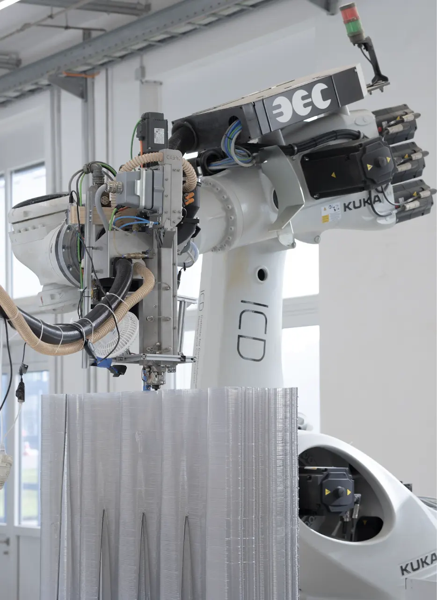
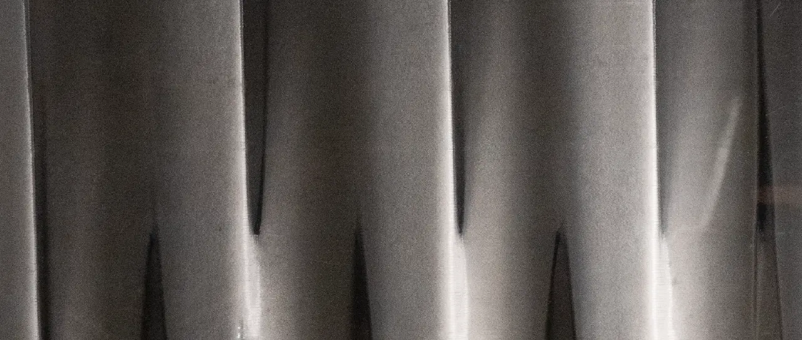
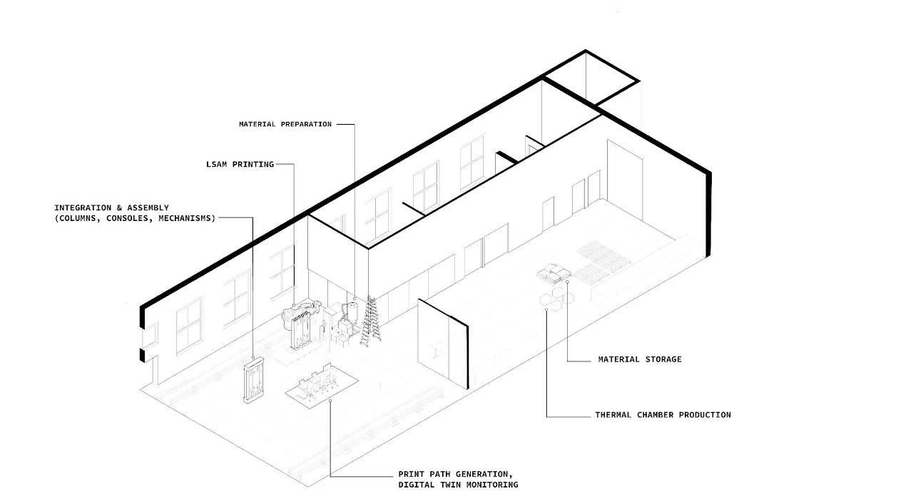
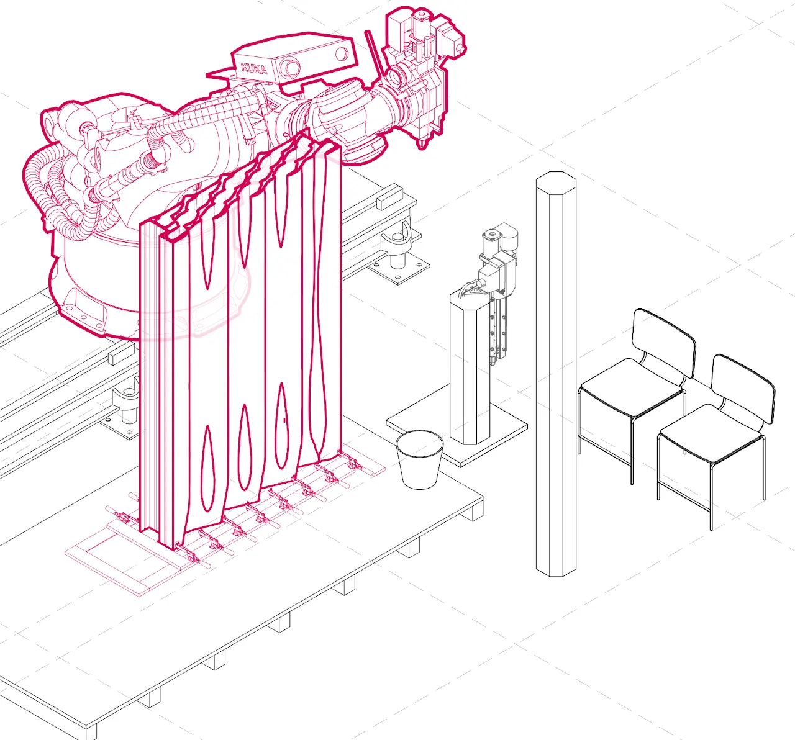

← all workresearch
Responsive Facade

- context
- ITECH Studio
- year
- 2024
- type
- research
- my role
- Computational Design, Research, Climate Sensors & Mechanism Design
This research aims to design a materially efficient, responsive wall system to maximize year-long indoor thermal comfort, while minimizing the demand for operational energy. It aimed to do this by exploring the potentials of smart materialization through large scale additive manufacturing, to create an integrated wall system with embedded functionalities.
Designed for the ITECH Campus Lab Demonstrator, it combines a translucent, robotically printed PETG shell with micro-encapsulated phase-change material (PCM) to store and release heat within a compact envelope. The panel geometry is optimized for solar gain, thermal storage, and natural ventilation, passively stabilizing indoor temperatures over the year and reducing dependence on conventional HVAC. Integrating structure, airtight enclosure, ventilation channels, and thermal mass into a single component, the research culminates in a sensor driven, mechanically actuated facade panel that demonstrates how smart materialisation, data-driven design, and large-scale additive manufacturing can enable materially efficient, low-carbon facade retrofits for lightweight timber buildings.





